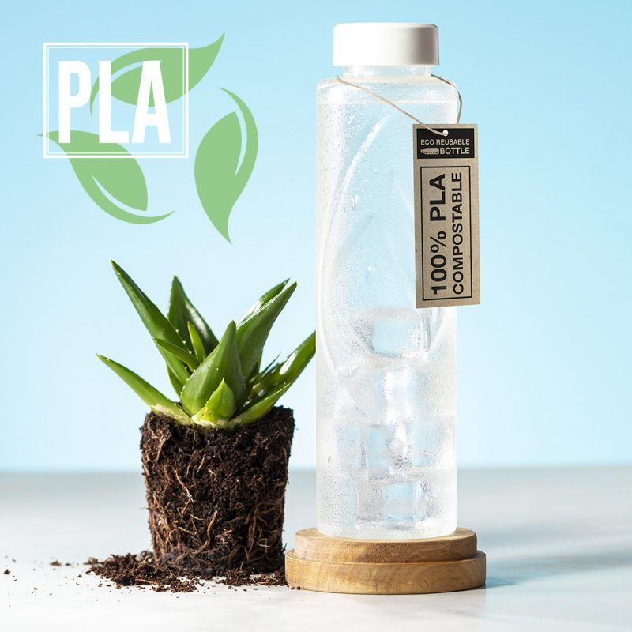

Garrafa biodegradáveis
As garrafas biodegradáveis são uma solução promissora para reduzir o impacto negativo dos resíduos plásticos no meio ambiente. Ao contrário das garrafas convencionais feitas de plástico tradicional, as garrafas biodegradáveis são projetadas para se decompor naturalmente e retornar à natureza, minimizando assim a poluição ambiental. Essas garrafas são feitas de materiais biodegradáveis, como polímeros de origem vegetal, como o PLA (ácido polilático) derivado do milho ou da cana-de-açúcar. O processo de fabricação dessas garrafas envolve o uso de fontes renováveis e de baixo impacto ambiental, reduzindo a dependência do petróleo e a emissão de gases de efeito estufa. Uma das principais vantagens das garrafas biodegradáveis é que elas se decompõem naturalmente ao longo do tempo. Em condições adequadas, essas garrafas podem se decompor em compostos orgânicos simples por meio de processos biológicos, como a ação de bactérias e fungos. Isso resulta em uma redução significativa do tempo que essas garrafas permanecem no meio ambiente em comparação com as garrafas plásticas convencionais, que podem levar centenas de anos para se decompor. Além disso, as garrafas biodegradáveis também oferecem uma alternativa aos plásticos de uso único, como garrafas de água descartáveis. A conscientização crescente sobre os problemas causados pela poluição plástica levou muitas pessoas e empresas a adotarem soluções mais sustentáveis, e as garrafas biodegradáveis são uma opção viável e ecologicamente correta. No entanto, é importante ressaltar que, embora as garrafas biodegradáveis sejam uma alternativa melhor em termos de impacto ambiental, é fundamental que elas sejam descartadas corretamente em instalações de compostagem ou reciclagem. O descarte inadequado pode comprometer sua capacidade de se decompor adequadamente e, assim, prejudicar o meio ambiente. Em resumo, as garrafas biodegradáveis representam uma alternativa promissora às garrafas plásticas convencionais, oferecendo uma redução significativa no impacto ambiental. Com sua capacidade de se decompor naturalmente e a utilização de materiais renováveis, elas contribuem para a redução da poluição plástica e a preservação do meio ambiente. No entanto, é importante promover uma cultura de descarte responsável para maximizar os benefícios dessas garrafas sustentáveis.
Impotancia das empresas com meio ambiente
A importância das indústrias se preocuparem com o meio ambiente não pode ser subestimada. O crescimento industrial e a busca por lucros não podem ocorrer à custa da degradação ambiental. Em vez disso, as empresas devem adotar práticas sustentáveis e responsáveis que promovam a proteção do meio ambiente e a preservação dos recursos naturais. Aqui estão alguns pontos-chave sobre a importância desse compromisso:
1. Preservação dos ecossistemas: As indústrias dependem dos recursos naturais, como água, ar limpo, solo fértil e biodiversidade, para operar e produzir bens e serviços. Ao adotar práticas que minimizem o impacto negativo no meio ambiente, as indústrias contribuem para a preservação dos ecossistemas, garantindo a disponibilidade desses recursos no longo prazo.
2. Responsabilidade social corporativa: As empresas têm uma responsabilidade social de agir de forma ética e sustentável. Isso implica em considerar os impactos ambientais de suas operações, reduzir a pegada de carbono, minimizar a produção de resíduos e adotar tecnologias limpas. Ao assumir essa responsabilidade, as indústrias demonstram comprometimento com a sociedade e constroem uma reputação positiva.
3. Cumprimento da legislação ambiental: As indústrias devem cumprir as regulamentações ambientais estabelecidas pelos governos. Ao se preocuparem com o meio ambiente, as empresas evitam sanções legais, multas e possíveis impactos negativos na imagem da organização. Além disso, a conformidade ambiental promove a igualdade de concorrência entre as empresas, evitando que algumas delas se beneficiem às custas da degradação ambiental.
4. Eficiência e redução de custos: A adoção de práticas ambientalmente sustentáveis pode resultar em maior eficiência operacional e redução de custos. Por exemplo, a implementação de tecnologias de economia de energia e de gestão eficiente de recursos pode reduzir o consumo de energia e matéria-prima, gerando economias significativas a longo prazo. Além disso, a redução da produção de resíduos pode diminuir os custos associados ao tratamento e descarte desses resíduos.
5. Inovação e vantagem competitiva: Empresas que priorizam a sustentabilidade estão mais bem posicionadas para enfrentar os desafios do futuro. A inovação em tecnologias limpas e práticas ambientais pode levar a novas oportunidades de negócios, permitindo que as empresas se destaquem no mercado e atendam às demandas crescentes dos consumidores por produtos e serviços sustentáveis.
Em suma, as indústrias desempenham um papel fundamental na preservação do meio ambiente. Ao se preocuparem com questões ambientais, elas contribuem para a sustentabilidade global, evitam impactos negativos à saúde humana e à biodiversidade, além de garantir a disponibilidade de recursos naturais para as futuras gerações. A responsabilidade ambiental das indústrias é um caminho para um desenvolvimento econômico mais equilibrado e sustentável.Existem diferentes materiais que podem ser utilizados na criação de garrafas biodegradáveis. Aqui estão alguns exemplos dos quais usamos:
1. PLA (ácido polilático): O PLA é um polímero biodegradável derivado de fontes renováveis, como o milho ou a cana-de-açúcar. É um dos materiais mais comuns usados na fabricação de garrafas biodegradáveis. O PLA pode se decompor em compostos orgânicos através de processos naturais.
2. PHA (polihidroxialcanoato): Os polihidroxialcanoatos são polímeros biodegradáveis produzidos por bactérias. Eles podem ser obtidos a partir de matérias-primas renováveis, como óleos vegetais ou açúcares. O PHA é um material versátil que pode ser utilizado na fabricação de garrafas biodegradáveis.
3. Mater-Bi: O Mater-Bi é um material biodegradável desenvolvido pela Novamont. É uma mistura de PLA e amido de origem vegetal. O Mater-Bi possui propriedades semelhantes ao plástico convencional, mas pode se decompor em compostos naturais ao longo do tempo.
4. PCL (policaprolactona): A policaprolactona é um polímero biodegradável que pode ser utilizado na fabricação de garrafas biodegradáveis. Ela tem a vantagem de se decompor mais rapidamente do que alguns outros materiais biodegradáveis.
Esses são apenas alguns exemplos dos materiais que podem ser utilizados na criação de garrafas biodegradáveis. A escolha do material depende das propriedades desejadas, da disponibilidade de recursos renováveis e dos processos de fabricação utilizados. É importante considerar a compatibilidade do material com as instalações de compostagem existentes para garantir uma correta decomposição e redução do impacto ambiental.